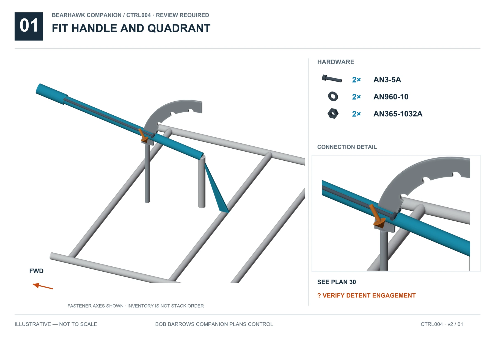
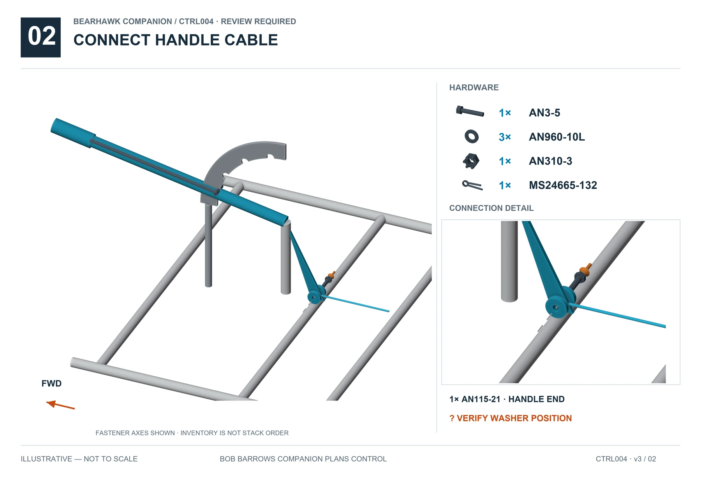
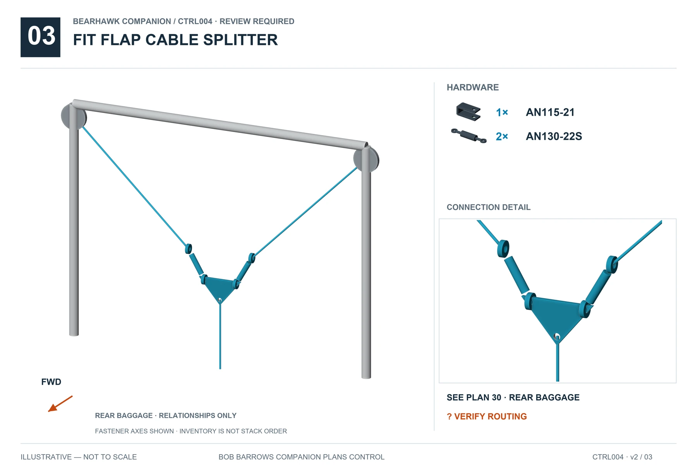

04 · CONTROLS · CTRL004 · v3
Flap Cockpit Controls
REVIEW REQUIREDSupported relationships are illustrated. Resolve the open items below before completing affected operations. Hardware inventories do not specify unresolved stack order.
Before this operation
Factory AD-004 identifies the aft-most flap-system pulley for recurring inspection and replacement. Keep access to this pulley when fitting the baggage floor; use the factory illustration to identify it on your kit.
Tap an illustration for full-size viewing.
Fit handle and quadrant
Full size ↗
Connect handle cable
Full size ↗
Fit flap cable splitter
Full size ↗
Open items
- BH-REV-008 · Pin engagement, spring fit and travel-stop setting need kit fit verification.
- BH-REV-009 · Full Companion pulley route and washer allocation remain unresolved.
- BH-REV-048 · Aft-most flap pulley inspection and service-life tracking are absent from the earlier guide.
- BH-REV-049 · First flap-speed setting conflicts between newsletter and current factory alert; in-flight deflections are not ground rigging targets.
Beartracks / factory updates
BT21-PATROL-PULLEY · BT21-FIVE-ROUTING · BT22-SPEED · BT23-SPEED · FACTORY-AD004 · FACTORY-OA002
Sources and visual references
- Companion plan 30
- BHManual-Fuselage1-25Rev1.pdf pp21–22
- Companion Hardware Callout Rev2, supplied Companion+Hardware+Customer+-+Sheet1-2.pdf p3 HK-FCC
- 2021_Beartracks.pdf, PDF p27 / Q3 p11, Flap Pulley Mount Reinforcement
- 2021_Beartracks.pdf, PDF p35 / Q4 p7, Five Flap Cable Routing
- 2022_Beartracks.pdf, PDF p41 / Q4 p9, Maximum Flap Speeds
- 2023_Beartracks.pdf, PDF p9 / Q1 p9, March clarification of December notice
- Factory AD-004, 12/11/25, Flap System Pulley Failure, p1
- Factory OA-002, March 1 2023, Flap Extension Speed, p1